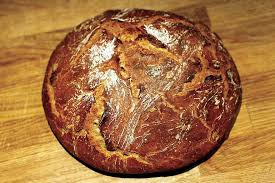
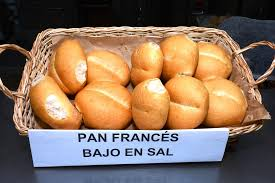

NOSSO PÄO

|
Pão do país. Pão feito com farinha do país. Manufatura artesanal com tempo lento de fermentação. |

|
Pão de aldeia. Pão feito com farinha do país e massa mãe. O pão que comiam nossas avós. |

|
Pãezinhos de pão. Pão feito com farinha do país e massa mãe. O pão que comiam nossas avós. |

|
Päo ecológico. Pão elaborado com farinha biológica e massa mäe. |

|
Pão orgânico multicereais. Pão à base de farinha e de cereais biológicos com massa mãe. |

|
Pão de chía.Pão feito com farinha biológica, massa-mãe e chía. |
|  | Pão de cereais. Pão de cereais (trigo, centeio e aveia) feito com massa mäe. |  | Pão francês. Pãezinhos feitos com manteiga e leite. |

|
Bara do país. Barra de pão do país, feita com farinha do país. |

|
Barra branca. Barra de pão de trigo. |